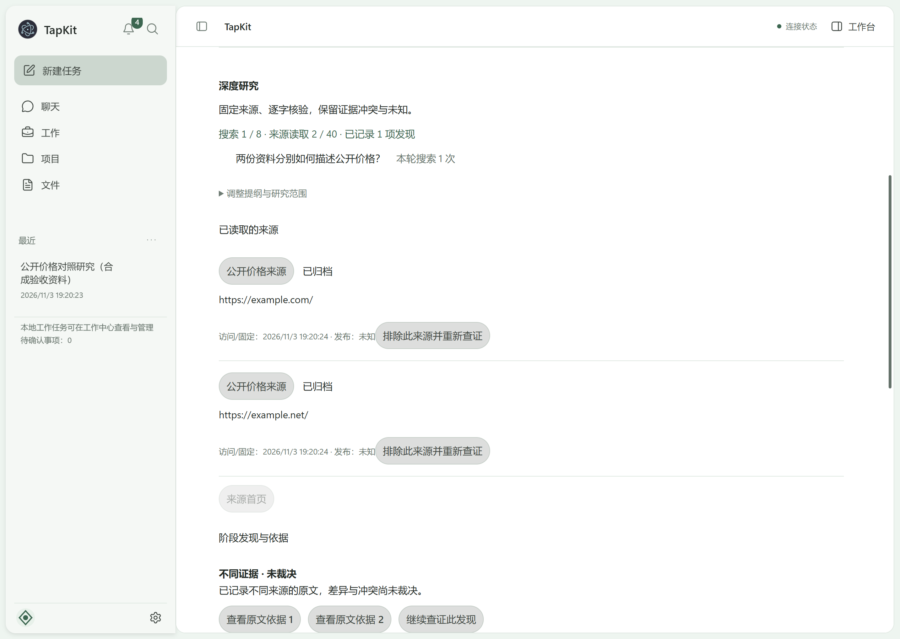

Windows 安装包
{{DOWNLOAD_ACTION}}- 版本
- {{VERSION}} · {{CHANNEL}}
- 系统要求
- {{OS}}，{{ARCH}}
- 运行环境
- 随包提供，无需另装 Node、Python、Git 或 Office
{{DOWNLOAD_STATE}}
查看文件大小和 SHA-256
{{SIZE}}
{{HASH}}
安装、升级和卸载说明{{RELEASE_NOTES}}
隐私
会话、项目和导入资料保存在本机。连接模型、访问网页或同步仓库时，会按所用功能向相应服务发送数据。